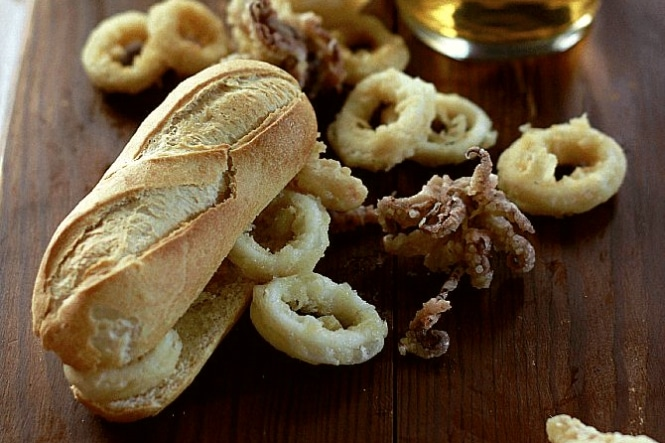
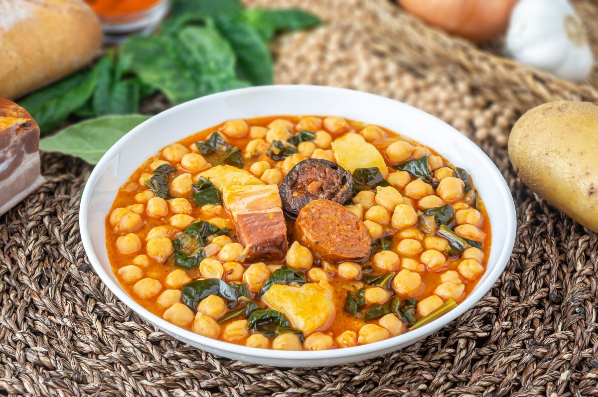

Cocido madrileño
El cocido madrileño es uno de los platos más representativos de la cocina de Madrid, Consiste en un guiso cuyo ingrediente principal son los garbanzos y los secundarios, aunque con gran protagonismo, diversas verduras, carnes y tocino de cerdo con algún embutido.

Bocadillo de calamares
No tienen pérdida, no hay que pensar mucho. Nada más sencillo que un bocata de calamares en la plaza Mayor, Son muchos los que aquí sirven la baguette con calamares a la romana y un toque de mayonesa

Potaje de garbanzos
Se trata de un potaje hecho con garbanzos, espinacas y otras verduras, como zanahoria, cebolla y tomate, además de laurel, perejil, ajo, pimienta, sal y aceite
